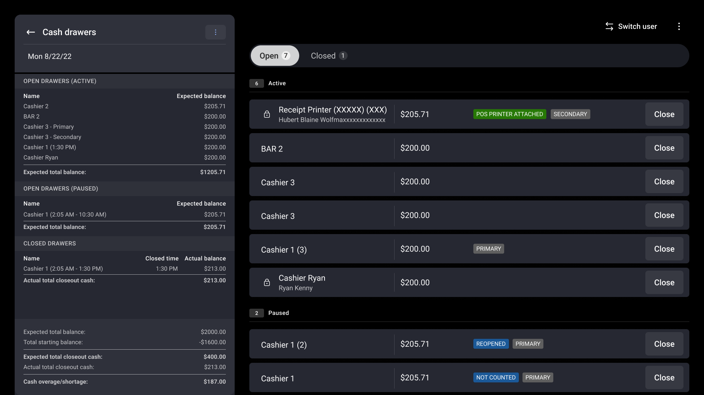
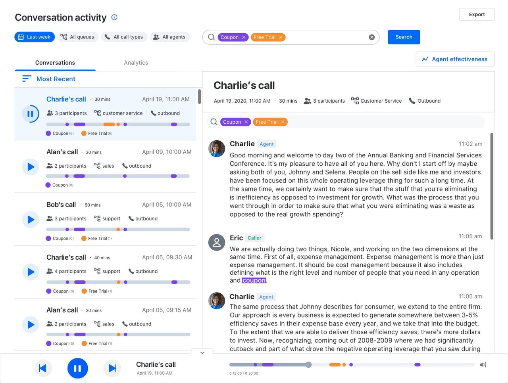

Product designer A portfolio in progress
Clarity forcomplex work.
Less friction. More control. SC / 01
Selected work 05 cases / Read at your pace
Toast Restaurant operations · 2024
A clearer close
Rethinking tip entry and check closure around the way staff work—and the rules the system has to keep.
Workflow design POS systems Design direction
Read the case study ↗
Browse presentations ↗
Toast POS Check-centered closeout
The decision at the center
Tips belong to individual payments.Closure belongs to the whole check.
↗

02 / Toast Restaurant operations · H2 2023
Cash management, Clearer drawer states, better-prioritized actions, and a shared view of cash activity.
Read the case study ↗
03 / GoTo Contact-center tools · Q1 2021
A shared view. A flexible wallboard that connects choosing metrics, managing boards, and sharing the view.
Read the case study ↗

04 / GoTo AI-assisted review · Concept demo · 2020
Find the moment. Exploring a faster path through call recordings, transcripts, and keyword search.
Read the case study ↗
05 / Cattia Game design · Mobile simulation
A world to build. Gameplay structure, player flows, and a visual system for a world of cats, buildings, and discovery.
Read the case study ↗
A different way to explore Less scrolling. The Toast closeout presentation walks through the alternatives and tradeoffs, one slide at a time.
Go to presentations ↗ Separate from the written case studies.
More work, in brief 06 project snapshots
A wider view of the products I’ve worked on. These are short snapshots from the source portfolio, rather than full case studies.
Toast / Administration Toast Web + Global navigation, product pages, and an alert system for the restaurant-manager administration platform.
View original designs in Figma ↗ Toast / In-service reporting POS dashboard + Quick, digestible sales and labor information on POS, helping managers find performance context during service without switching to authenticated web reports.
View original designs in Figma ↗ Bevi / Connected devices A more personal pour + A personalized beverage experience, a step-by-step installation wizard for technicians, and service tools for stocking, activity logs, and issue alerts.
View original designs in Figma ↗ Grasshopper / Small business Business calls, anywhere + A multi-platform virtual phone system that separates business and personal calls, with business numbers and extensions across devices.
View original designs in Figma ↗ GoTo / Contact center Supervisor dashboard + Real-time analytics and actionable dashboards within a contact-center experience spanning administrators, supervisors, and agents.
View original designs in Figma ↗ GoTo / Contact center Outbound dialer + A workflow that moves missed calls into an outbound campaign and automatically dials for available agents, reducing manual dialing steps.
View original designs in Figma ↗
Original-design links may require Figma access. No launch or impact metrics are inferred for these snapshots.
A little about me
I like the workbehind the interface. My work has spanned restaurant operations, contact-center tools, connected devices, and independent game design. I’m interested in the decisions that make complex products understandable: what people need to see, what the system can support, and how to keep work moving when something is incomplete.
These cases bring together original product screens, recorded interactions, and the thinking behind the work. Presentations live in their own section, for a more guided walkthrough.
Résumé
Experience &background. Product design across AI-assisted workflows, restaurant operations, contact centers, and connected devices.
Based on the résumé dated September 24, 2025 . Roles marked “Present” reflect that version. The original may require Figma access.
Experience
Dec 2024 –Present
Microsoft Senior product designer
Copilot sales agents, post-meeting video experiences, and shared Copilot design patterns.
Jul 2024 –Dec 2024
Peppr (Meituan) Senior product designer
Design lead for restaurant systems across POS, dashboards, and reports.
Aug 2021 –Jul 2024
Apr 2019 –Aug 2021
Sep 2017 –Apr 2019
Bevi Sole UX/UI designer
Smart hydration interfaces, device maintenance, and service workflows.